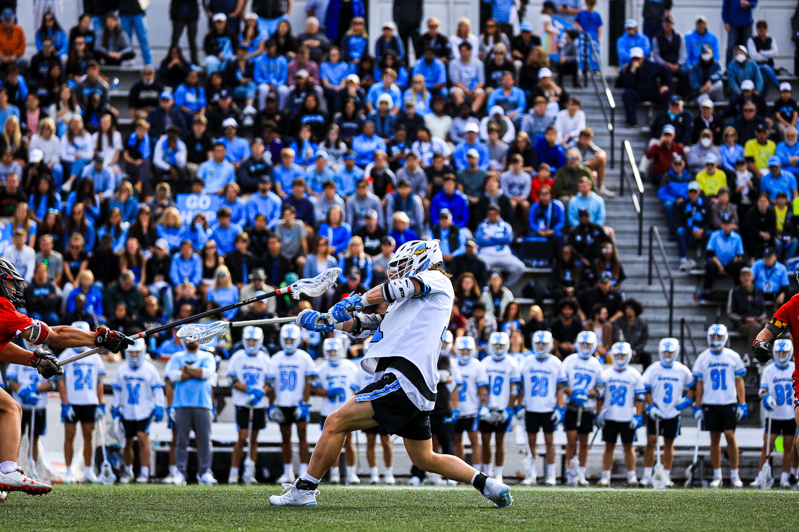

Hi! My name is
Connor Oiler
I am an aspiring Product Developer and Software Engineer

My Projects


Education
Major: Bachelor of Science
Computer Engineering
Minors:
Computer Science
Entrepreneurship and Management
Expected Graduation:
May 2026
Extracurriculars

Community Involvement

Student Athlete

On Campus Groups
Skills
Coding Languages
- Python
- Javascript
- Java
- C++
- Dart
- HTML/CSS
Technologies
- React
- Figma
- React Native
- Flutter
- Node.js
- TensorFlow
Product Development
- User Research
- Product Life Cycle
- Market Research
- Customer Interviews
- User Testing
- Cross Functional Teams